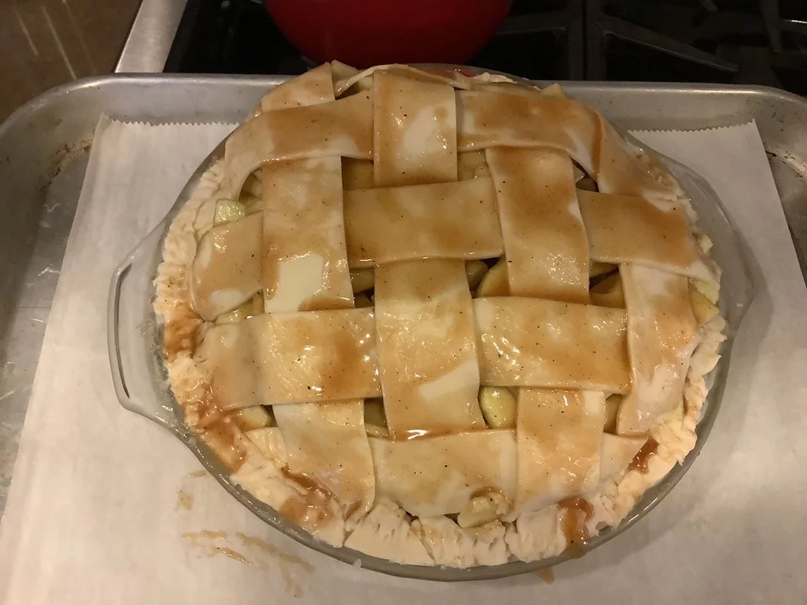

Grandma Ople's Homemade Apple Pie

Description
This homemade tasty apple pie recipe will have your taste buds craving more! This apple pie won several first place prizes in local competitions. A prep time of 30 minutes with a 1 hour cook time. Makes 8 servings.
Ingredients
- 1 recipe pastry for a 9 inch double crust pie
- 1/2 cup unsalted butter
- 3 tablespoons all purpose flour
- 1/4 cup of water
- 1/2 cup white sugar
- 1/2 cup packed brown sugar
- 8 granny smith apples - peeled, cored and sliced
Steps
- Preheat oven to 425 degrees F (220 degrees C). Melt the butter in a saucepan. Stir in flour to form a paste. Add water, white sugar and brown sugar, and bring to a boil. Reduce temperature and let simmer.
- Place the bottom crust in your pan. Fill with apples, mounded slightly. Cover with a lattice work crust. Gently pour the sugar and butter liquid over the crust. Pour slowly so that it does not run off.
- Bake 15 minutes in the preheated oven. Reduce the temperature to 350 degrees F (175 degrees C). Continue baking for 35 to 45 minutes, until apples are soft.